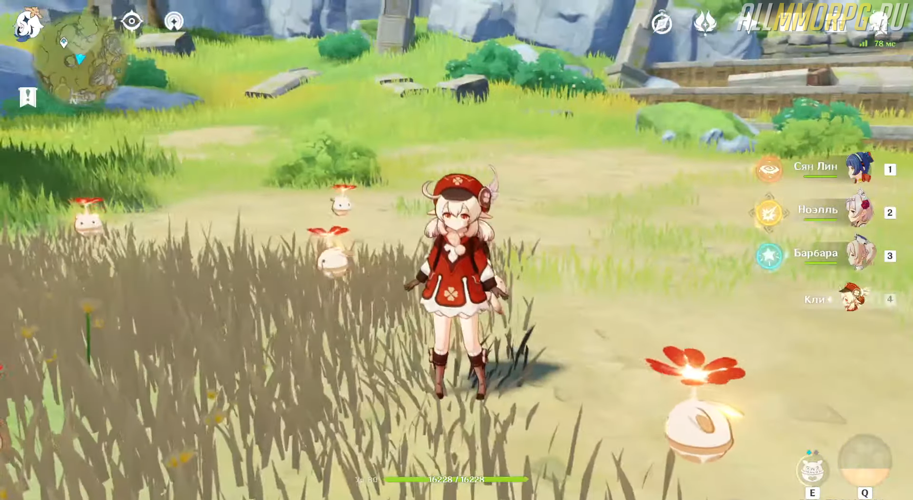

Genshin Impact: гайд на Кли (лучший билд)
Кли – ★★★★★ герой в Genshin Impact, принадлежащий стихии Пиро. Она является довольно мощным бойцом дальнего боя, с легкостью расправляется с боссами или группой противников как в открытом мире, так и в подземельях. Если вы уже выбили этого героя или только планируете добавить его в свою коллекцию, вам необходимо прочитать гайд на Кли и узнать все ее особенности.
1. Преимущества и недостатки Кли
Кли входит в ТОП лучших героев и относится к категории Тир S
Главные преимущества героя:
- Взрывы от использования способностей откидывают врагов;
- У персонажа огромный базовый пиро-урон;
- Персонаж легко вызывает взрывные пиро-реакции;
- Кли обладает пассивным талантом «Всюду сокровища!», что дает возможность игроку отслеживать на мини-карте диковинки Мондштадта, которые требуются героям для Вознесения.
- Небольшая дальность атаки, поэтому вам придется постоянно двигаться, чтобы избежать урона от монстров;
- Герой не вызывает никаких устойчивых стихийных реакций, кроме ее стихии (Пиро);
- Не может выполнять функции героя поддержки. Единственная способность поддержки находится на последнем месте созвездия. Вам понадобится много времени для прокачки героя и разблокировки этой способности.
Недостатки Кли:
Кроме того, у Кли есть еще один минус – долгая анимация обычной атаки. В некоторых случаях это создает определенные проблемы, например, не позволяет вовремя увернуться и не получить урон в ближнем бою. Единственный выход из этой ситуации – после каждой обычной атаки делать прыжок на месте или совершать рывок, нажав правую кнопку мыши.
2. Описание и особенности использования умений

Бабах! (активная способность)
При использовании навыка герой бросает перед собой до 3 бомб, которые взрываются и
наносят неплохой АОЕ-урон. Если зарядить способность, Кли выполнит сильную АОЕ-атаку
(требует затрат выносливости).
Прыг-скок бомба (2 заряда)
Способность «Прыг-скок бомба» довольно неудобная в применении и ситуативная. При
использовании умения герой кидает перед собой бомбу, которая трижды отскакивает от
земли и при каждом столкновении с поверхностью наносит АОЕ-урон. В конце бомба
рассыпается на мины. Мины через некоторое время взрываются и тоже наносят АОЕ-
урон. Также мины взорвутся сразу при контакте с противником.

Почему способность неудобная? Потому что вам нужно тщательно продумать траекторию
полета бомбы, чтобы она задела как можно больше врагов и мины в конце тоже попали в
цель. Сделать это будет довольно трудно и не всегда возможно.
Грохот и искры
«Грохот и искры» – ультимейт Кли. При использовании способности герой создает область,
которая наносит всем врагам, попавшим под ее действие, сильный урон от Огня.
Где можно применять способности Кли
Способности Кли полезны в сражениях с врагами различных стихий, включая противников,
защищенных щитами со стихийными эффектами. Бонусом к этому станет возможность
добывать ресурсы путем применения обычной атаки (Кли кидает бомбы в залежи руды и
взрывает их).